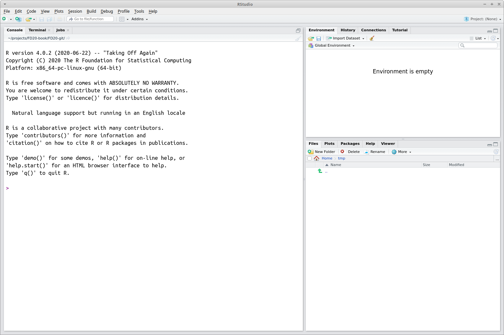
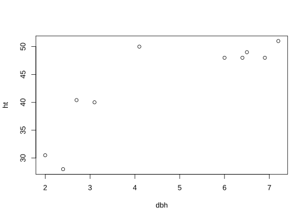

Chapter 2 Introduction to R and RStudio
As briefly discussed in Section 1.1, there are a variety of high-level programming languages commonly encountered in practice. Each has strengths and weaknesses, and it’s not uncommon that two or more are used in a single large project. This book focuses on R for several reasons.
- R is free.
- It’s one of, if not the, most widely used software in the environmental sciences.
- R is under constant open source development by an expert core group. Open source means that anyone can inspect, modify, and enhance the code.4
- It has an incredible variety of contributed packages.
- A new user can (relatively) quickly gain enough skills to obtain, manage, and analyze data.
R has several enhanced interfaces, which are referred to as integrated development environments (IDEs). These interfaces simplify and facilitate software development. At minimum, an IDE consists of a source code editor and build automation tools. We’ll use the RStudio IDE, which according to its developers “is a powerful productive user interface for R” (RStudio Team 2020). RStudio is well documented, under continuous development, and makes learning and using R more enjoyable.5 Although we’ll use RStudio, we can accomplish most of what we cover in this book in R (without an added interface) with few if any changes.
2.1 Installing R and RStudio
It’s easy to install R on computers running Microsoft Windows, macOS, or Linux. For other operating systems, users can compile the source code directly.6 R is available for download via the Comprehensive R Archive Network (CRAN) at . You must install R prior to installing RStudio. RStudio is also easy to install and is found at . Detailed and up-to-date instructions for downloading and installing R and RStudio are provided on the book website.
Start RStudio as you would any other program. For example, Microsoft Windows users will find it under the Start Menu or desktop shortcut (if the installation created a shortcut). Figure 2.1 displays a view of RStudio.

FIGURE 2.1: The RStudio IDE.
Initially the RStudio window contains three smaller windows. For now our main focus is on the large window on the left. This is the console window and it’s where you type R commands. The next section provides a brief applied tour of RStudio using small non-complex data. Later in the book we’ll work with larger and more complex datasets. To get more comfortable with RStudio, follow along with these sections at your computer, enter the commands, experiment with different commands, and explore.
2.1.1 First session
The command prompt is the greater than sign > and is located in the console window in Figure 2.1. Evaluate (or “run”) code added after the command prompt by pressing the Enter key. Below, and throughout the book, code appears in a gray block and output (i.e., result) follows on subsequent lines and to the right of #>. The # appearing in the code blocks is the comment character, everything to the right of this character is ignored. The comment is used to add short explanations about code. Below you’ll see a [1] printed before the output. We’ll explain its relevance later in Section 4.2.3, but ignore this for now.
Below are a few commands followed by their output.
#> [1] 234#> [1] 7.3891#> [1] 0.69315#> [1] 100As illustrated above, functions perform different tasks. A function is called like this
where value_1 is the value you provide to the first argument argument_1 and value_2 is the value you provide to the second argument argument_2.7 When you start typing the name of a function in the console, a pop-up shows possible completions and mousing over these options shows their function arguments and definitions. Pressing F1 on your keyboard opens the function’s manual page in the Help tab in the lower right RStudio window. Functions can have any number of arguments, you’ll see some with no arguments and others with an indeterminate number of arguments. You’ll also learn how to write your own functions in Chapter 5.
If a command is not completed, but the Enter key is pressed, the command prompt changes to a + sign which is R’s way of letting you know it’s expecting additional code to complete the command. This often happens when you forget to close parentheses when typing a function or mathematical expression, i.e., typed a left parenthesis ( but not the matching right parenthesis, or when you open a quote with the quotation symbol " but forget to close it with a second quotation symbol. To get back to the > command prompt, you can either type something to finish the command, e.g., right parentheses ) or closing quotation ", or press the Esc key and retype the command.
Pressing the “up” arrow key while in the console window cycles through the command history. This is useful when you want to rerun a command or tweak a command—press “up” until the command appears then edit it before pressing Enter to run.
R has two widely used assignment operators: the left arrow, which consists of a less than sign followed immediately by a dash, <-, and the equals sign, =. R users continuously debate the merits of each assignment operator and their subtle differences. Many leading R style guides recommend the left arrow <- and we’ll use this throughout the book. Because it’s cumbersome to type <-, RStudio provides a keyboard shortcut Alt + - (hold the Alt key down and press the minus key). You can find this and many other shortcuts by going to the Tools dropdown menu in RStudio then Keyboard Shortcuts Help.
The line of code below assigns the value 5 to object x.
Notice we call x an object. You might think of x as a mathematical variable that’s given the value 5. However, it’s more appropriate to think of x as an object that can be described using a set of attributes, e.g., it is a numeric object and has a single value. These attributes define how a given object behaves in our code.
When you created x, you might have noticed it appeared in the top right Global Environment window, which keeps track of all objects you create in your RStudio session.
Typing an object’s name in the console returns its value.
#> [1] 5Careful, R is case sensitive. Try typing capital X in the console and you’ll get an error because it was not defined.
#> Error: object 'X' not found
You can remove objects using the rm() function. For example, rm(x) removes x from the global environment.
It’s easy to compute basic descriptive statistics and produce standard graphical representations of data. Let’s consider the first 10 tree height and DBH observations in the FEF dataset introduced in Section 1.2.1. Begin by entering these data “by hand” using the c() function, which concatenates its indeterminate number of arguments into a vector.8. For larger datasets we’ll clearly want a more efficient way to enter data.
dbh <- c(6, 6.9, 6.4, 6.5, 7.2, 3.1, 2, 4.1, 2.4, 2.7)
ht <- c(48, 48, 48, 49, 51, 40, 30.5, 50, 28, 40.4)When you create dbh and ht, you’ll notice their names and a short description of their attributes appear in the Global Environment window. Again, typing dbh and ht in the console returns their values.
#> [1] 6.0 6.9 6.4 6.5 7.2 3.1 2.0 4.1 2.4 2.7#> [1] 48.0 48.0 48.0 49.0 51.0 40.0 30.5 50.0 28.0 40.4Try out the summary() function on dbh or ht. This function computes some basic summary statistics for numeric objects. For example, from the output below we see dbh has a minimum of 2, maximum 7.2, and median of 5.05. These and other summary statistics are introduced in Chapter 11.
#> Min. 1st Qu. Median Mean 3rd Qu. Max.
#> 2.00 2.80 5.05 4.73 6.47 7.20Here’s a very basic scatter plot of dbh versus ht. We’ll take a much more detailed tour of R’s graphics capabilities later in Chapter 6.

You’ll notice the graphic output from plot(dbh, ht) pops up in the lower right window Plots tab. Unsurprisingly the plot shows a positive relationship between tree DBH and height, i.e., as DBH increases so too does height albeit in a nonlinear way (i.e., the points do not fall along a straight line).
2.2 Workspace and working directory
The workspace is your R session work environment and includes any objects you create. These objects are listed in the Global Environment window. The function ls(), which stands for list, also lists all objects in your workspace (note, this is the same list given in the Global Environment window).9 When you close RStudio, a dialog box will ask you if you want to save an image of the current workspace. If you choose to save your workspace, RStudio saves your session objects and information in a .RData file (the period makes it a hidden file) in your working directory. Next time you start R or RStudio it checks if there’s a .RData in the working directory, loads it if it exists, and your session continues where you left off. Otherwise R starts with an empty workspace. This leads to the next question—what is a working directory?
Each R session is associated with a working directory. This is just a directory (i.e., folder) from which R reads and writes files, e.g., the .RData file, data files you want to analyze, or files you want to save. On macOS when you start RStudio it sets the working directory to your home directory (e.g., /Users/andy). If you’re on a different operating system, you can check where the default working directory is by typing getwd() in the console. You can change the default working directory under RStudio’s Global Options dialog found under the Tools dropdown menu.
There are several ways to change the working directory once an R session is started in RStudio. One method is to click on the Files tab in the lower right window, navigate to the desired working directory, then select Set As Working Directory under the More dropdown menu. Alternatively, you can set the session’s working directory using the setwd() function in the console. For example, on Microsoft Windows setwd("C:/Users/andy/book/exercise1") sets the working directory to C:/Users/andy/book/exercise1, assuming that file path and directory exist. Microsoft Windows file path uses a backslash, \, but in R the backslash is an escape character, hence specifying file paths in R on Windows uses the forward slash, i.e., /. Similarly on macOS you can use setwd("/Users/andy/book/exercise1"). Perhaps the simplest method is to use the Session dropdown menu in RStudio Session > Set Working Directory > Choose Directory then navigate to and select the desired working directory. Later on when we start reading and writing data, it’ll be important that you can identify your current working directory relative to where data files are stored. We revisit these topics in Section 3.3.1 and 3.4.1.
2.3 Packages
As we’ve seen, functions are used to perform different tasks. These functions, along with their documentation and example datasets, are collected and distributed in packages. When you install and start R, a bundle of packages is automatically loaded and you can immediately use the functions they contain. These default packages, collectively referred to as base R, provide the language’s basic functionality.
We’ll eventually use packages written by R community members that contain functions tailored to specialized tasks and analyses. Many contributed packages are available on CRAN. When we last checked, CRAN hosted 20,007 contributed packages! This staggering number is a testament to R’s popularity and active community. Some of these packages are organized into CRAN task views that provide guidance on which packages are relevant for various topics. There is, for example, an Analysis of Ecological and Environmental Data task view that lists packages used for environmental data analysis.
To access functions stored in a package not included in base R, you need to do two things:
- Install the package on your computer. You only need to install the package once. Use the
install.packages()function to install a package. Alternatively, you can install the package via theInstallbutton in thePackagestab located in RStudio’s bottom right window. For example, in Chapter 6 we’ll use thedplyrpackage installed usinginstall.packages("dplyr"). - Load the package. You need to load the package every time you start a new session using the
library()function. Loading the package gives you access to the package’s functions. For example,library(dplyr)loads thedplyrpackage.
2.4 Getting help
A comprehensive, but overwhelming, RStudio cheatsheet is available under the Help dropdown menu Help > Cheatsheets > RStudio IDE Cheat Sheet. As you progress in learning R and RStudio, this cheatsheet will become more useful. For now you might use the cheatsheet to locate the various windows and functions identified in the coming chapters
There are several help-related functions. For example, to learn about the log() function run help(log) or ?log in the console to bring up its manual page. Also, as we saw in Section 2.1.1, typing the function name on the console and pressing F1 opens its manual page. The function help.start() opens a web page of documentation. To use this, run help.start() in the console window. The web page stated using help.start() also provides links to several online manuals.
Many package authors provide vignettes as a user-friendly way to demonstrate package use through worked examples and more human readable details then found in manual pages. Run browseVignettes(package="package_name") in the console to access vignettes provided for the given "package_name".10
For example, if you installed the dplyr package via install.packages("dplyr") as described in Section 2.3, then you can run browseVignettes(package="dplyr") to list all the vignettes available for the dplyr package. You can access a specific vignette by running vignette("vignette_name", package = "package_name"), e.g., run vignette("base", package = "dplyr") to read about how dplyr functions compare with equivalent operations in base R—topics we’ll address later in this book. We’ll direct you to relevant vignettes as packages are introduced in subsequent chapters.
Internet search engines provide another, sometimes more efficient and user-friendly, way to find answers to your questions. A Google search that includes “R” along with a short description of your question or issue is often fruitful. Such a search typically takes you to R help pages, tutorials, or general programming question/answer forums such as stackoverflow. If you’re receiving a cryptic R warning or error message, a Google search often yields enough information to get you moving in the right direction.
In addition, R users have written many types of contributed documents. Some of this documentation is available at www.r-project.org/other-docs.html. Of course there are also numerous books covering general and specialized R topics available for purchase.
2.5 Summary
We introduced the R programming language and RStudio interface—our tools of choice for working with forestry and ecological datasets. We located the RStudio console window and practiced a few commands. We briefly introduced the workspace and working directory. We discussed how functions are stored in packages and how non base R packages must be installed and loaded prior to accessing their functions.
Lastly, we discussed the all important topic of getting help when you’re stuck. Knowing when and where to look for help online or using manual pages is a skill developed over time. A significant amount of programming and data analysis involves Googling and adapting code others have written. In fact, some of the most efficient programmers and analysts are those who can recognize the problem, understand the general way to go about answering it, and adapt previously written code to accomplish the problem. We encourage you to explore the different options for getting help, and figure out which ones you find most helpful and informative.
The next chapter introduces tools and skills needed for efficient and reproducible analysis workflows.
2.6 Exercises
For Exercises 2.1-2.4, perform the following simple calculations in the R console.
Exercise 2.1 Calculate 4 + \(\sqrt{5}\).
Exercise 2.2 Calculate \(e^{10}\), where \(e\) is the exponential function.
Exercise 2.3 Calculate \(5^5 - 10^{10}\).
Exercise 2.4 Calculate \(\frac{(5 + 5)}{(3 \times 4)}\). Make sure to include the parentheses in your code.
Exercise 2.5 Recall the plot we created of the dbh values vs the ht values using plot(dbh, ht). Run the code to recreate this plot in the console. Next, run the code plot(dbh, ht, pch = 19). What does the pch = 19 argument do? Further explore the pch argument by setting pch to values different from 19, e.g., 15, 16, 3, etc.
Exercise 2.6 Let’s extend the plotting code a bit further. Run the code plot(dbh, ht, pch = 19, col = 'blue') in the console. What does the col argument do? Don’t like blue? Choose a different color from the list of built-in colors displayed by typing colors() in the console.
Exercise 2.7 Run the code plot(dbh, ht, pch = 19, col = 'blue', xlab = 'DBH') in the console. What does the xlab = 'DBH' do? There is a similar argument called ylab. Try to figure out a way to change the label of the y-axis to Height.
References
See more about the open source license at www.r-project.org/about.html.↩︎
The company Posit developed and maintains RStudio. Posit was originally also called RStudio, but the company changed its name to Posit in 2022 to reflect its development of data science products beyond RStudio. See the Posit website for more details (https://posit.co/).↩︎
Windows, macOS, and Linux users also can compile the source code directly, but for most it’s a better idea to install R from compiled binary.↩︎
We use
code fontthroughout the book to indicate R code and things to do with RStudio and file paths. Also, when referring to functions in the text, we’ll append()to the function name, e.g., the square root function issqrt().↩︎We’ll provide a much more detailed introduction to vectors in Section 4.2 We briefly mention them here as a teaser and to motivate initial exploration.↩︎
You might wonder about the empty parentheses after
ls. Some functions don’t require arguments; however, the parentheses still need to be added. Running a function name without parentheses returns the function’s definition, which, at times, can be instructive.↩︎Many package developers only include vignettes on an associated website for the package, in which case the
browseVignettes()function will not return any vignettes. The package website can be found by going to theURLsection of the CRAN package page athttps://cran.r-project.org/web/packages/package_name/index.html, wherepackage_nameis replaced with the package of interest.↩︎